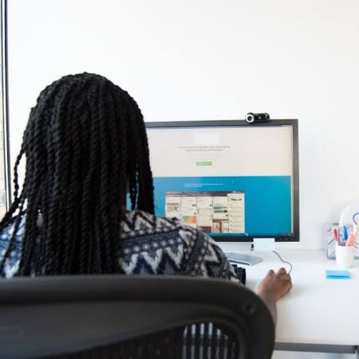
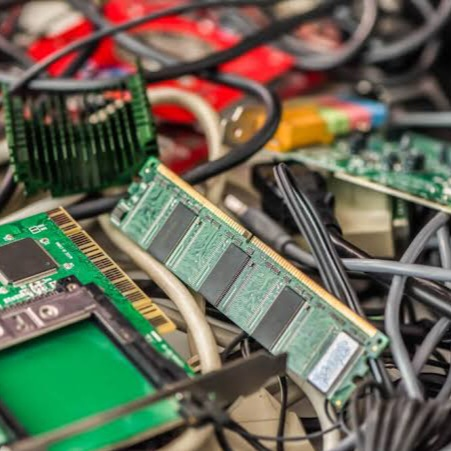
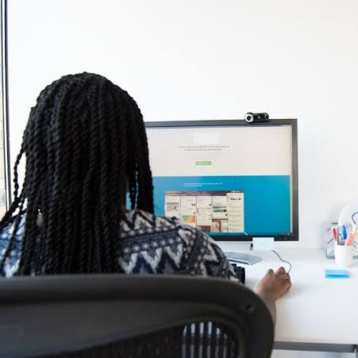
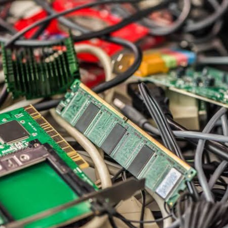

Reciclagem de lixo eletrônico
A reciclagem de lixo eletrônico é um dos trabalhos realizados pela Estação de Metarreciclagem. Compreende o recebimento de equipamentos eletrônicos e o desmanche e a triagem dos componentes.
Utilizando ferramental e ambiente adequado a equipe seleciona os resíduos após a separação, sendo em sua maioria ferro, plástico, cobre, alumínio e placas de circuito impresso.
Posteriormente esses resíduos são reciclados por empresas licenciadas e que realizam o processo de maneira ambientalmente correta.
 



Rede de Coleta
A Estação de Metarreciclagem possui uma rede de postos de coleta onde qualquer pessoa pode descartar corretamente seus equipamentos e resíduos eletroeletrônicos em geral, tais como: computadores, impressoras, celulares, televisores, fios, mídias de CD e DVD, entre outros.
Com pontos de coleta em regiões centrais a rede conta com mais de 30 pontos em Brasília e região metropolitana. Há disponibilidade ainda de realizarmos coletas domiciliares.